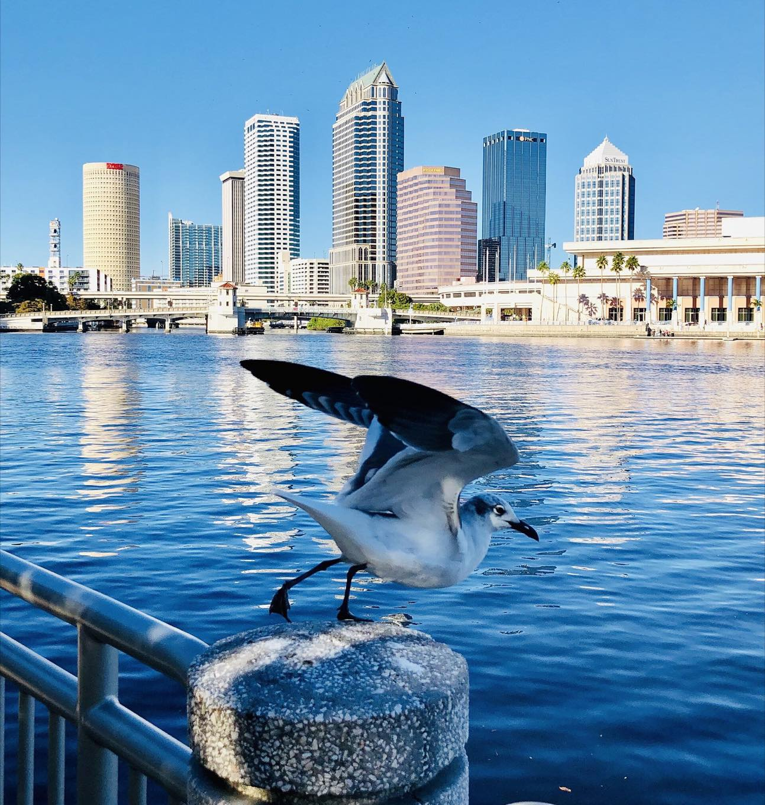
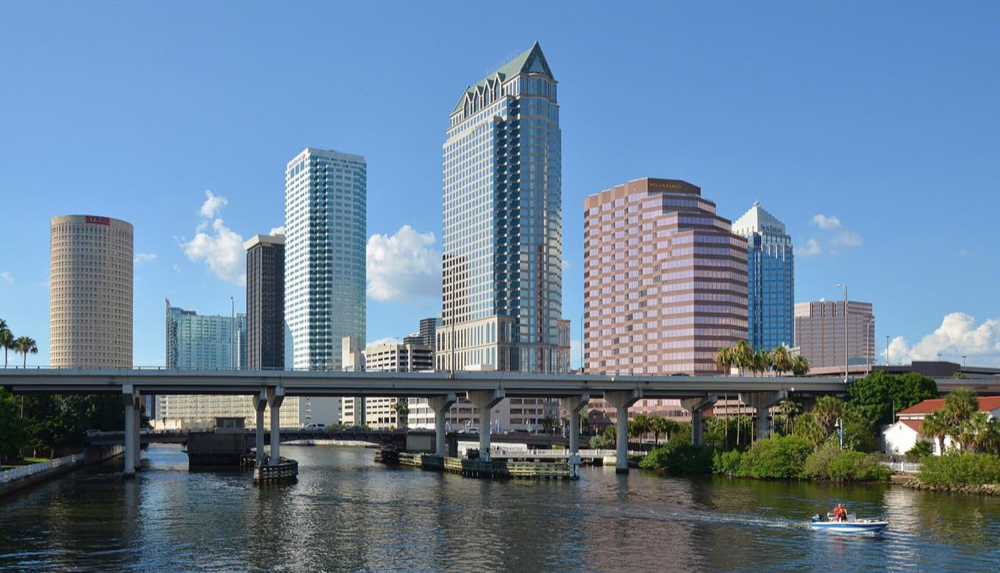
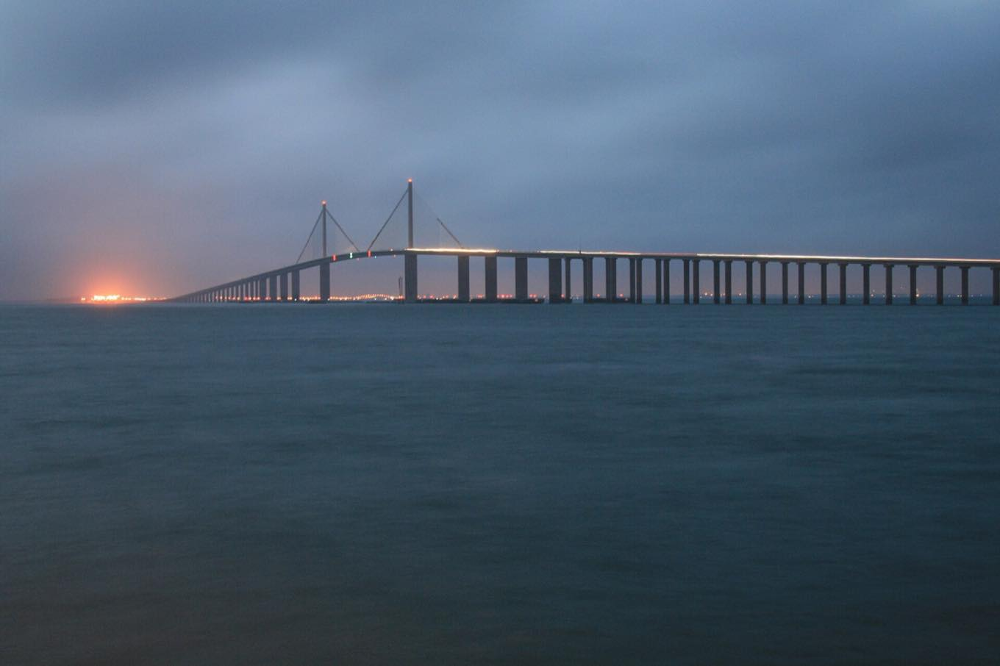
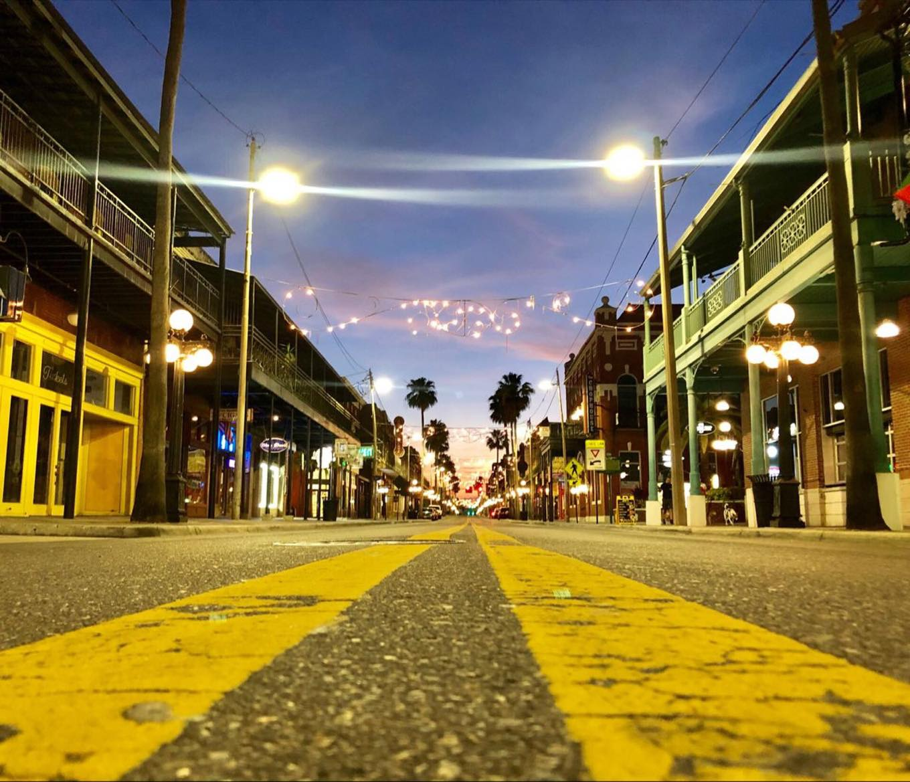

The Strawberry Festival
573,299 guests · 2026Eleven days, in Plant City, ten minutes from our house. The best-attended festival in Florida, and it happens in the town I am telling you to move to.[14]

In response to the drawing set titled “Miami → Jacksonville, Parce”, 13 sheets, dated 4 September 2026
Diego. Naty. That is a genuinely good deck. I read all thirteen slides twice. It is right about almost everything, and it still points you at the wrong city.
Here is the same argument with the third option left in.
Where we agree
This is not a defense of Miami. I am not going to tell you the housing math is fine, because it is not fine.
“Trade some Miami intensity for space, optionality and family bandwidth.”
Correct. Every word. A thirty-seven-year-old architect with a wife and a five-year-old should not be handing that much of his income to a landlord or a lender so that he can be near a nightclub he has not been inside since 2019.
So we agree on the problem, and we agree on roughly ninety percent of that deck. What follows is the other ten percent, and the other ten percent is the whole move.
It compares two cities. Florida has more than two cities.

Downtown Tampa · Clément Bardot · CC BY-SA 4.0Act one
Everybody agrees Miami is too expensive. The argument is about what you do with the difference.
The column nobody ran
Slide 4 cites Livingcost.org, updated 21 June 2026, for the cost of raising a family. I opened the identical page. I changed one city in the URL.
Estimated monthly cost, family of four
Livingcost.org · updated 21 June 2026 · the deck’s own source, its own date
Miami → Jacksonville saves $2,220 a month. Miami → Tampa saves $1,567 a month.
That is the entire rebuttal in one number. The deck sells an escape from Miami prices. Tampa delivers seven-tenths of that escape. The remaining three-tenths is what the rest of these sheets is about, and I am going to price it honestly.
Jacksonville is cheaper than Tampa by $653 a month. I am not going to pretend otherwise. I am going to tell you what that $653 is buying.
Median after-tax salary is $3,945 in Jacksonville and $4,463 in Tampa.[3] Same source. Roughly eighty percent of the cost difference is absorbed by the fact that Tampa pays people more.
The money slide, audited
Slide 3 puts Jacksonville next to Miami and lets a $339,830 gap do the persuading. It is a real gap, honestly sourced. It is also the one matchup no Florida city can lose.
Here is what happens when you put Jacksonville next to the places I am actually proposing. Same source for all five, so nobody gets to pick a favorable methodology.
Typical home value
Zillow Home Value Index · 2026 · one source, five places
Plant City minus Jacksonville: $47,855. Miami minus Plant City: $238,099.
Jacksonville wins this chart. It wins it by $47,855, which at current rates is a couple hundred dollars a month on a note.
Against Miami that gap looks like the difference between two lives. Against Plant City it is the difference between two kitchens.
You have said you want a bigger house with a garage, and that is the whole point of leaving Miami. In Riverview, Plant City, Wesley Chapel and the Brandon corridor, a two-car garage is not an upgrade, it is what the house comes with. That is true in Jacksonville too. The difference is not what the house has. It is what is around it.
What the difference buys
Every sheet from here is priced against that number. If Jacksonville’s discount is worth more than what follows, take it. It is a real city and that was a real argument.
But you should see the other side of the ledger before you sign anything, and the Jacksonville deck never had reason to put it there. This is that list.

Sunshine Skyway · public domainAct two
A house is a number. How often your family walks through the front door is a different kind of number.
Everyone you love is in Miami
Not almost. Closer by a mile. Slide 10 sells Jacksonville as a launchpad and lists St. Augustine, Amelia Island, Orlando and Savannah. Notice which city is not on that list.
This is the sheet that matters most, because your whole family is in one city and neither of these moves puts you in it. The only question is how far away you agree to be.
Where each city actually sits
Road miles · Tampa is the middle of the state, Jacksonville is a corner of it
Driving distance to the people you are leaving behind
Road miles, Miami unless noted
Move to Jacksonville and Georgia sits as close to you as everyone you are leaving in Miami. That is not a joke at anyone’s expense. It is a coincidence of geography that happens to be perfect.
Tampa is a Saturday-morning drive. Leave after breakfast, be there for lunch, and your kid falls asleep in the car on the way home that night. Jacksonville is five to six hours each way, which quietly turns every visit into a three-day commitment, and turns most of them into no visit at all.[7]
Sixty-five miles does not sound like a relationship. Ninety minutes each way, forty weekends a year, for the next twenty years, is a relationship.
And the rest of the state opens up on top of it. Orlando in about ninety minutes, Sarasota in under an hour, Fort Myers in two.[7]
And then there is Colombia
Your family is in Miami, so this one is a bonus rather than the argument. It is still the single cleanest fact in this document. Avianca has flown Tampa to Bogotá nonstop since March 2025. It went daily that October. It now runs about twenty flights a week.
Getting to Bogotá
The same trip, from two Florida airports
From Tampa
4h 00m
Nonstop, Avianca, A320neo. Roughly 20 departures a week. TPA’s first scheduled nonstop to South America in nearly fifty years.[5]
From Jacksonville
No such flight
JAX has two international nonstops: San Juan, which is a US territory, and Toronto, which is seasonal. Zero to South America.[6]
And it is not a gap anyone is racing to close. Jacksonville’s airport authority commissioned a study on which nonstop international routes to chase next. The shortlist came back Dublin, Frankfurt, London, Paris, Reykjavík.[6]
Not one South American city. Jacksonville is not planning to fly to your family. It is planning to fly to Iceland.
Nobody moves cities over a flight route. But your kid is five, and at some point you are going to want him to know where he is from, and the difference between a four-hour nonstop and a connection through Atlanta is the difference between going every couple of years and going once.
The Colombian question, answered
Survive. That is slide 12’s own word, in the list of what you are really buying. An honest word, and I want the record to show that the ceiling being offered here is survival.
“Miami has the deeper Colombian ecosystem. Jax gives you enough connection while buying back space, cost and pace.”
It names three. Delicias Colombianas, Antojitos, Salento. That is an honest list, and it is also close to the complete list, which is the problem.
Tampa Bay and greater Orlando together hold roughly 85,000 Colombians, described in the migration literature as the second-largest concentration in the United States after Miami. Florida holds about thirty percent of the entire Colombian diaspora, and the three named centers are Miami–Fort Lauderdale, Orlando–Kissimmee, and Tampa Bay.[8]
Jacksonville appears on none of those lists.
Fifteen, and I stopped writing, not because I ran out.
Diego. The word parce is on the cover of that deck. There is a restaurant named after it twenty minutes from here. The pitch is quoting our neighborhood to sell you a different one.
You still live in Florida, part two
Slide 9 is titled “The ocean didn’t stay in Miami,” which is true, and then offers “surf-and-bike coastal living,” which is the phrase you reach for when the water is cold.
Average water temperature, February
Degrees Fahrenheit · the month that decides whether a beach is a beach
Four degrees does not sound like an argument until you are the parent standing in it. But temperature is the smaller half of this.
The Gulf here is shallow, flat and slow. A five-year-old can walk out a long way and the water stays at his chest. North Florida’s Atlantic has surf, and shore break, and rip currents, which is genuinely wonderful if you are twenty-two with a board and genuinely tiring if you are the one watching a kindergartener in it.
That is a beach for the man you were. This is a beach for the man with a five-year-old.

7th Avenue, Ybor City · Eric Statzer · CC BY-SA 4.0Act three
Three careers restart the day you sign. The only question is how big a city they restart in.
Both of you start over
Diego needs a firm. Naty rebuilds a client list from nothing. And the embroidery and printing business needs a market. That is the true price of this move, and I want to say plainly that it is the same price in either city.
So the only honest question left is which city gives you more to rebuild into. That question has a number attached to it.
Tampa Bay is not slightly bigger. It holds 1.68 million more people than metro Jacksonville, which is roughly another whole Jacksonville and then some.[13]
Her clients are ten to twelve minutes from the front door and her schedule is as good as a schedule gets. Any move breaks that. The Jacksonville version of this move breaks it exactly as badly, so nobody gets to count it as a point against Tampa.
What differs is the thing she rebuilds into. Same work, same word of mouth, same slow first year, into a market more than twice the size and dense enough that a ten-minute radius still contains a real book of business. If she is going to pay the cost of starting over once, she should only have to do it once.
Embroidery and 3D printing are demand businesses. They need crowds, teams, events, schools and small manufacturers within driving range, and this comparison is not close either.
Slide 5 leads with $1.23 billion, Jacksonville’s five-year capital improvement plan. That is a line in a municipal budget. It is not a project, it is a projection, and you have been in this business long enough to know the difference.
Here is what is under construction in Tampa Bay right now, by name.
All of it verifiable, all of it named, all of it hiring.[10]
Three careers restarting at once is a lot to ask of a city. Ask it of the bigger one.
Pick your version
Slide 6 gives you four flavors of Jacksonville, and it is a good slide. Here are ours, weighted the way you would actually weight them: a yard, a decent school, and a drive that does not ruin the day.
And St. Petersburg exists and is lovely and I am deliberately not pitching it, because you two want a yard and a garage, not a walk-up near a pier.
The sheet nobody enjoys
I want to be careful here, because this is the argument people overplay, and Jacksonville’s trend is genuinely good news.
Jacksonville’s murder count fell below one hundred in 2024 for the first time since 2011, and it fell again in 2025. That is real progress by people working hard at it, and it deserves to be said out loud.[11]
It is also a count that started above one hundred for thirteen consecutive years. Tampa is a smaller city, so compare rates rather than counts if you want to be rigorous; Tampa’s violent crime rate sits marginally below the national average. Jacksonville’s sits well above it.
Neither city is a war zone and nobody should pretend otherwise. But this sheet was not in the deck, and it belongs in the decision.
Act four
Five things Jacksonville does better, the storm question answered straight, and the scorecard.
No propaganda either
Slide 11 conceded Miami’s wins, and that concession is exactly why the rest of that deck reads as honest. Same rules here. These are real and I am not going to soften them.
You are going to raise 2024, and you should. Helene drove record surge into Tampa Bay that September, and Milton came ashore weeks later with a one-in-a-thousand-year rainfall over parts of the bay. That was real, it was frightening, and I am not going to wave it off.
Here is the context the coverage left out. Milton made landfall at Siesta Key, south of the bay, and it was the first hurricane to strike the Tampa Bay region in more than a century. The last direct hit on Tampa Bay by a major hurricane was 1921, near Tarpon Springs. One hundred and three years between them.[12]
And the people who price this risk for a living have already run the comparison you are about to run.
Average annual homeowners premium
Single-family home · 2026 county ranges
Jacksonville is not the cheaper insurance market. It is the more expensive one. Plant City sits thirty miles from open water and the premiums reflect it.
| Category | Winner | How close |
|---|---|---|
| Sticker price of a house | Jacksonville | By $47,855 |
| Monthly cost to run a family | Jacksonville | By $653, minus a $518 raise |
| Storm risk | Toss-up | Lower frequency there, lower premiums here |
| Surf | Jacksonville | Not close |
| Traffic | Jacksonville | Not close, and we feel it daily |
| Market to rebuild two careers in | Tampa Bay | 2.2× the metro population |
| Events and crowds for the business | Tampa Bay | 573,299 in Plant City alone, every March |
| Getting to Bogotá | Tampa Bay | Nonstop versus nonexistent |
| Getting to Miami | Tampa Bay | 65 miles and about 90 minutes |
| Colombian community | Tampa Bay | Not close |
| Water you can swim in year-round | Tampa Bay | Warmer, and calm enough for a kid |
| Named projects under construction | Tampa Bay | Cranes versus a five-year plan |
| Violent crime | Tampa Bay | Both improving, different starting points |
| Weekend range | Tampa Bay | Center of the state versus a corner |
| Historic downtown for an architect | Tie | Ybor against St. Augustine is a fair fight |
| Somebody who loves you nearby | Tie | See sheet A-13 |
The final pitch
“And your friend is already here.”
That is the whole close and I am not going to dress it up.
That deck argues from a brochure, and it argues well. We are arguing from a lease, a mortgage, a moving truck and a decision we made with our own money about where to raise our own kid. We ran the experiment. We had the house, and the beach forty minutes away, and every reason to believe it would be great.
You are about to restart two careers and a business in the same month. That is a hard year no matter where the truck stops. Do it once, and do it in the city that gives you the most to restart into, ninety minutes closer to every person you are related to.
Then we packed it up and drove two hundred miles southwest, and we have not spent one evening since wondering whether we got that wrong.
Everything on these fifteen sheets is a number you can check. This last part is the only thing I am asking you to take on faith, and it is the part I am most sure about.
Come for a weekend. Not a tour, a weekend. Fly into Tampa, four hours from Bogotá whenever family comes, and stay with us in Plant City.
Saturday we do Ybor and downtown, and Diego can decide for himself whether there is work here. Sunday morning we take the kids to the Gulf, where the water is flat and warm and comes up to their chests a hundred feet out. Sunday lunch is at Los 3 Parces in Brandon, and I am going to let the name of that restaurant do the closing argument for me.
And if you come in early March, come during the Strawberry Festival, walk the grounds, and count the booths selling shirts. Then tell me there is nothing here for the two of you.
Then drive down to Miami on Sunday evening. It is four hours. You will be home for dinner, which is the entire point.
And if we are wrong, you will have had a free weekend at the beach and the pleasure of telling us so. Worst case, parce, is not that bad.
Receipts
Slide 13 was called “the receipts” and it was a good slide. Here are ours. Where I use the Jacksonville deck’s figures I have kept its sources, so you can hold both documents open at once.
Where the two documents disagree on a number, distrust mine first, because I am the one with something to gain. Every figure above is linked or nameable so you can check me. Please check me.